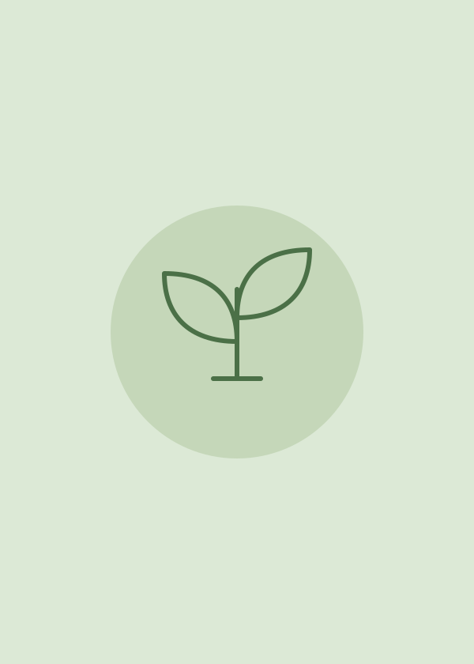

Food game
Explore the cards. Move your mouse to catch the light; click or tap to turn one over. You can also use Tab, then Enter or Space.
Climate Habits · Food / 01
Beans & lentils

A different kind of protein.
Turn over to explore ↻
Climate Habits · The other side
Beans & lentils
Your food facts go here. Add what you want players to learn about beans and lentils.
Your question or small action goes here.
Turn back to the front ↻
Climate Habits · Food / 02
A plant-based meal
Something new on your plate.
Turn over to explore ↻
Climate Habits · The other side
A plant-based meal
Your food facts go here. Add what you want players to learn about trying a plant-based meal.
Your question or small action goes here.
Turn back to the front ↻
Climate Habits · Food / 03
Tomorrow’s leftovers
A second helping of possibility.
Turn over to explore ↻
Climate Habits · The other side
Tomorrow’s leftovers
Your food facts go here. Add what you want players to learn about making another meal from leftovers.
Your question or small action goes here.
Turn back to the front ↻
Card effect credits & source
Motion and lighting adapted from Pokémon Cards CSS, © 2022 Simon Goellner. Modified for Climate Habits, November 15, 2026. This card experience is free software under GPL-3.0, without warranty; you may redistribute and modify it under that license. Attribution and source details.